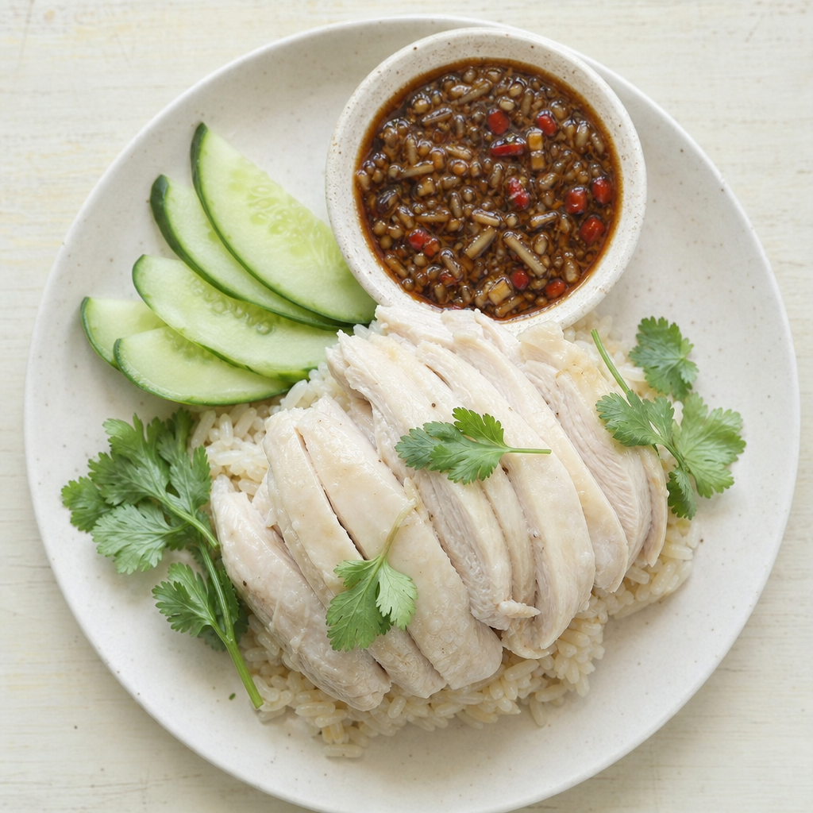
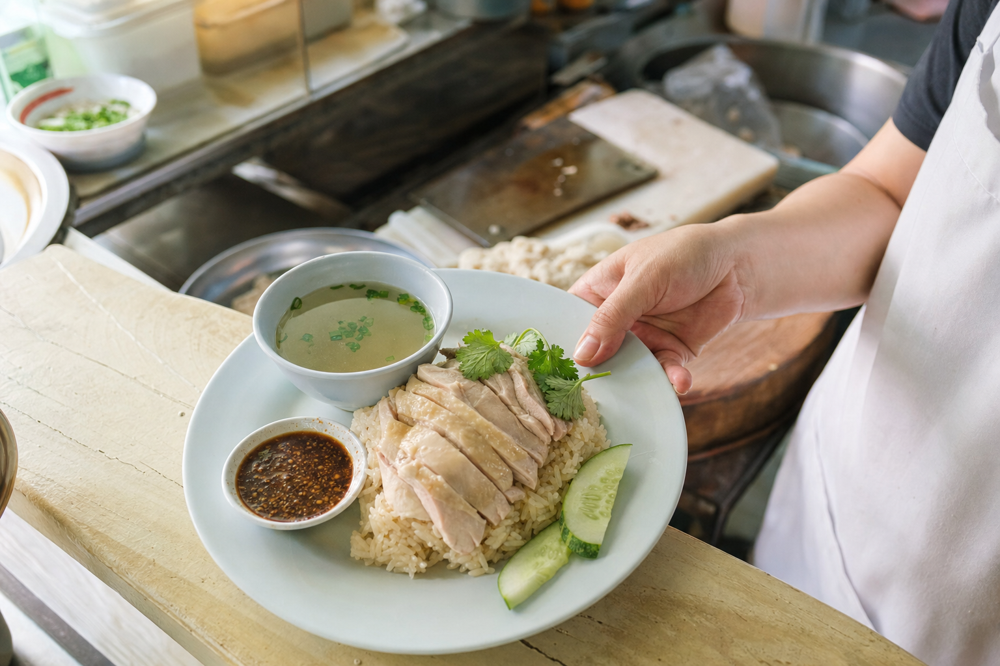
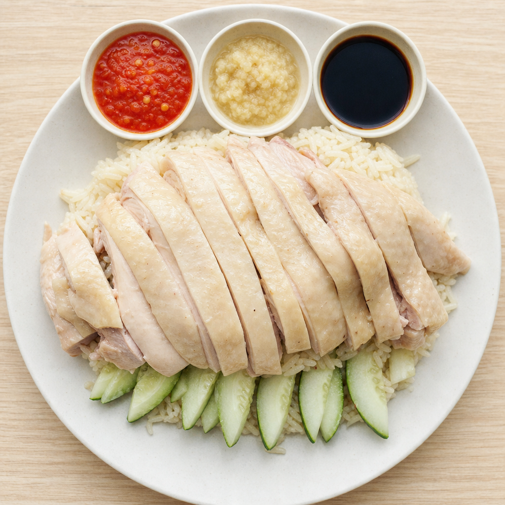
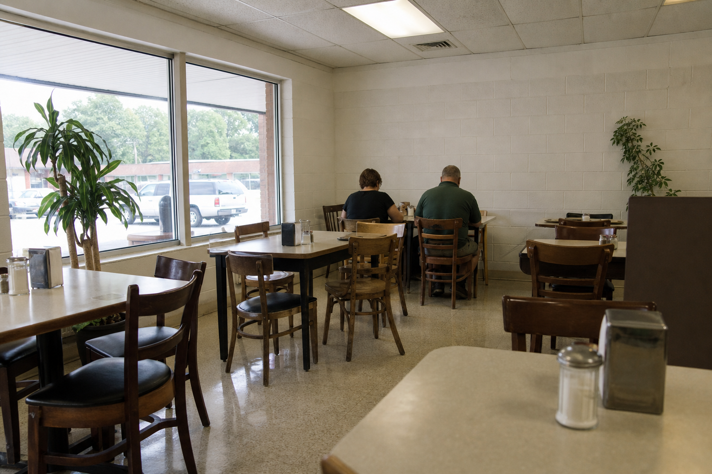

Thai style
One sauce, and it does all the work. Fermented soybean, ginger, garlic and chilli, dark and thick enough to hold onto the chicken.
Named for the cook's mother. Her name was Kim.
Thai, Singaporean and Korean food, cooked by one person, on Staunton's West End.

Most kitchens in America pick a side. This one cooks khao man gai the Thai way and the Singaporean way, and will happily explain the difference while you decide. It comes down to the sauce.

One sauce, and it does all the work. Fermented soybean, ginger, garlic and chilli, dark and thick enough to hold onto the chicken.

Three sauces, kept apart on purpose. Bright red chilli, grated ginger, and dark soy, so you mix each bite the way you want it.
It moves around. Three cuisines is a lot for one kitchen, so what is on any given day depends on what she felt like cooking. These are the regulars.
Prices and the day's specials come from the kitchen. Call ahead and ask what she is making.

KIM is on the West End at 1116A W. Beverley Street, in the building that also holds the Citgo station and the Little Mart, across from Thornrose Cemetery. If you are looking for a standalone restaurant with its own parking lot, you will drive past it.
The room is small and plain and that is not an accident. The money went into the kitchen.
An unsolicited design concept for KIM, prepared by Ohtari Labs. This is not their website.